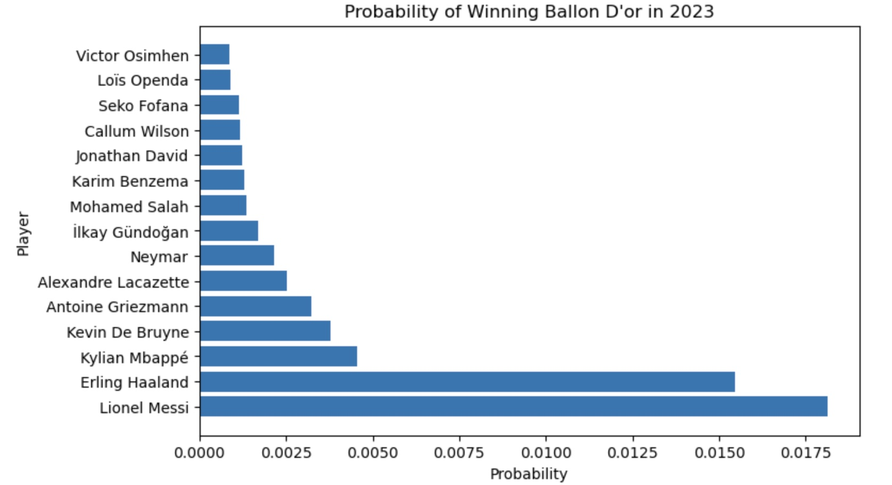
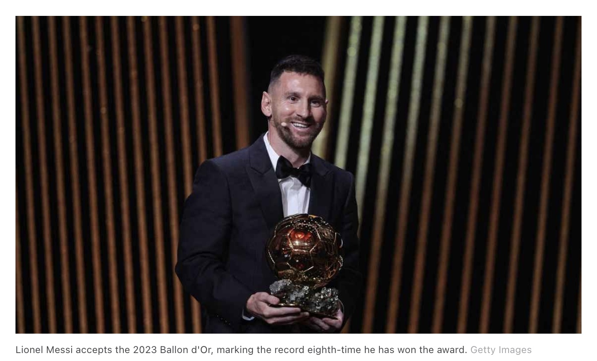

Who is Going to Win the Football Award Ballon D'or in 2023?
Nov 21, 2023
Story
I've watched soccer ever since I remember things... I grew up being a Barcelona fan, and therefore a Messi fan. I also grew up playing soccer and like many other kids,
I really wanted to play soccer professionally. I didn't play soccer professionally, but this beautiful sport opened many doors for me... I came to the United States to play
college soccer while pursuing a degree in Computer Information Systems. The best of both worlds!
With all this context in place, let's get into what actually is the Ballon D'or prize. This award has historically been regarded
as the most prestigious and valuable individual award. The winner, however, it's chosen from a voting process and in recent times this has generated some critics towards the organizers accusing them to be biased
towards attacking players or "most popular" teams.
This past year, 2023, was especially tricky as this was the year Messi finally won the World Cup with Argentina but there were other players such as Mbappe and Haaland who did extremely well with their clubs during the season.
So as a Data Analytics professional, I decided to take a data-driven approach, leaving all the biases from the voting process aside, and train a model that would pick the next winner of this award.
Solution
I scraped 20 years worth of football data at a team and player level. I cleaned it and preprocessed it to make it model ready. My variable of interest was whether the player had won the award that year or not. So a classification problem.
Check out the Model's Source Code!!
Check out the Data Collection Process!!
Let's see what my model predicted...
Although the model gave Haaland a good probability to win, the model predicted Messi to be the winner of Ballon D'or 2023
Who Won???
Technical Aspects
This project taught me a lot. The main challenge was that my data was very imbalanced.
Each season's worth of data that I scraped had only one award winner but had over 3000 players that did not win the award. How do you deal with that?
In my case, I chose a method called Synthetic Minority Oversampling Technique (SMOTE), which is a data augmentation technique (increases the size of your training set) for the minority class. In my case, the minority class were the award winners for which
I only had 20 data points out of 68k rows of data.
The main algorithm that I used was Logistic Regression, as this is a binary classification problem and I was interested in assigning a winning probability to each player in the dataset.
Tech Stacks
ML model:
- Python
- Statsmodels Package
- Scikit-Learn
- Pandas
- NumPy
Web Scraping:
- BeautifulSoup
- Requests
DevOps:
- Git
- Github